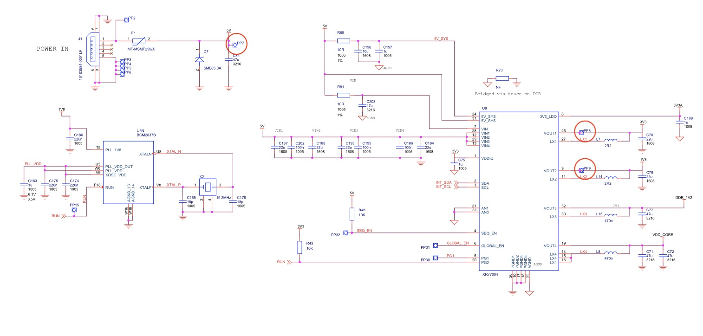

Programming, robotics, traveling
У меня есть Raspberry Pi 3B+ на которой я случайно замкнул на GPIO линии 3V и 5V. Было очень обидно, решил попробовать восстановить. Как всегда начал с теории.
Поведение у платы следующее: после включения питания, маргает красный светодиод, зеленый не моргает вообще, что указывает на наличие 5 вольт и выключенный SoC контроллер.
Начиная с версии 3B+ на плате стоит контроллер питания MXL7704-R3:
На официальном сайте (на странице продукта Raspberry Pi 3B+ по ссылке «schematic diagrams») представлена следующая схема, её фрагмент представлен ниже:

Для того чтобы разобраться, что происходит я замерил напряжение в контрольных точках PP7, PP8, PP9. В точке PP8 ожидаемо был 0.
После чего я решил с помощью лабораторного источника питания, ограничив ток до 150мА, подать ток на 3 вольтовый выход на GPIO. Однако запуск компьютера не произошел.
На этом этапе я не знал, что случилось с основным контроллером, однако решил попробовать заменить контроллер питания и заказал на али за 250₽.
После получения контроллера питания настала очередь выпайки старого. Я пришел к своему другу Алексею Кулагину на работу, где есть фен и микроскоп. И мы начали отпаивать контроллер, это оказалось очень непростой задачей ввиду огромного полигона снизу и очень толстой земли на плате.
Вот такой флюс мы использовали.
Нагрев феном при 370 градусах в течении 3х минут не дал резльтата, тогда мы решили разбавить бессвинцовый припой выводов обычным свинцовым (конечно для этой цели лучше бы подошел сплав Розе, но его у нас не оказалось).
Далее, прибавив температуру до 400 градусов контроллер все равно не давался, было решено нагреть его паяльником T12 с плоским жалом сверху (температура паяльника была 420 градусов) одновременно с феном. В четыре руки всё получилось.
Бессвинцовый припой, что остался после удаления контроллера почистили оплеткой, и плоским жалом нанесли аккуратный слой свинцового припоя.
Фото после чистки площадки.
После чего прогрели плату феном температурой 400 градусов и поставили чип на своё место. Однако с первого раза он встал не точно, что сложно увидеть невооруженным взглядом. Далее нагревая плату феном, двигали его пинцетом, пока он не встал.
Затем под микроскопом оглядели его контакты и поняли, что он не везде припаялся. Чтобы исправить это пропаяли контакты паяльником.
После всех манипуляций и перегревов мы запустили плату и она включилась, не описать как я был рад. Я и не верил, что она заведется.
Как вывод стало понятно, что такие кустарные методы, как лужение тонким слоем паяльником дорожек, не совсем классный способ, мб лучше было использовать пасту, однако она по непонятной причине не дошла за 2 мес.
А ещё я даже не предполагал, что понадобится микроскоп, без него понять задели ли мы нижний слой, порвали ли дорожку, пропаяли ли контакт было бы невозможным.